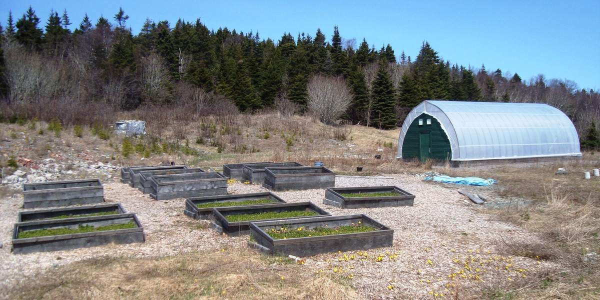

What Would It Take for a Family to Stop Buying Groceries for 3 Years?
This post may contain affiliate links. As an Amazon Associate I earn from qualifying purchases.
A look at the self-sustaining homestead dream, and the parts of it you can start this week.
"This family hasn't bought groceries in three years."
It's the kind of line that stops your scroll, and a viral reel making the rounds right now shows exactly what that life might look like. Picture ten acres of forest behind a tall fence with watchtowers. Inside are a family home, greenhouses, vegetable beds, a chicken coop, a fruit orchard, a pond stocked with trout and crayfish, a big firewood store, and a solar farm to keep the lights on.
Note: this is a concept design, not a real property.
It's a dream design, not a real place. But the idea behind it is very real, and it's growing fast: families who want to know where their food comes from, eat clean, and depend on no one else to put dinner on the table.
So what would it actually take?
1. Vegetables: the foundation
Everything starts with what you can grow. A family of four eating mostly from the garden needs a serious growing space. Most homesteaders plan for raised beds, a greenhouse or hoop house for a longer season, and a food-preserving routine (canning, drying, freezing) for the winter months.
Start small: you don't need acres to begin. A few Kratky jars of lettuce and herbs on a windowsill, or a tray of microgreens, will put fresh, clean greens on your plate in 2–3 weeks with no soil and no pump. (free mini-guide →)
2. Eggs and meat: chickens, goats, and pigs
- Chickens are the gateway animal. A small flock gives steady eggs, eats kitchen scraps, and builds compost for the garden.
- Goats add milk, cheese, and butter, and they clear brush on wooded land.
- Pigs turn scraps and forage into meat, and they till ground for next year's beds.
Every animal adds daily chores, feed, fencing, and vet care, so most families add them one at a time.
3. Fish: the protein people forget
A stocked pond, a creek, or a nearby lake can add fresh fish to the table. (Check your state's fishing license and pond-stocking rules first.)
4. Water and power: the parts nobody films
Clean eating starts with clean water. That usually means a well or another approved source, with storage and filtration. Off-grid power, like the solar farm in the reel, keeps freezers and pumps running when the grid goes down.
5. The honest part
Going 100% grocery-free is rare. Even serious homesteaders usually still buy salt, coffee, flour, or oil. The real win isn't perfection. It's needing the store less every year: less money out, more control over what your family eats, and more peace of mind.
Where to start (this week)
- Grow one thing you buy every week, like lettuce, herbs, or microgreens.
- Learn one way to preserve food.
- Price out a small backyard coop if your area allows chickens.
- Download our free Kratky mini-guide.
The fenced forest compound may stay a dream for most of us. But a kitchen that grows part of its own food? That can start on your windowsill.
Want the full step-by-step? "The Soil-Free Farming Revolution" walks you through growing without soil from your first jar to a full harvest.
— Tiny Living, Big Harvest. Downsize your bills, not your life.